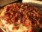

Alguns tipos e sabores
Alguns tipos e sabores
Alguns tipos e sabores
Alguns tipos e sabores
A variedade de coberturas que se pode colocar sobre uma pizza é quase infinita, entretanto, algumas preparações são tradicionais e tem fiéis seguidores:
 Margherita Margherita |
 Mussarela Mussarela |
 Portuguesa Portuguesa |
 Calabresa Calabresa |
 Califórnia Califórnia |
 Pepperoni Pepperoni |
 Quatro quijos Quatro quijos |
Bacon |